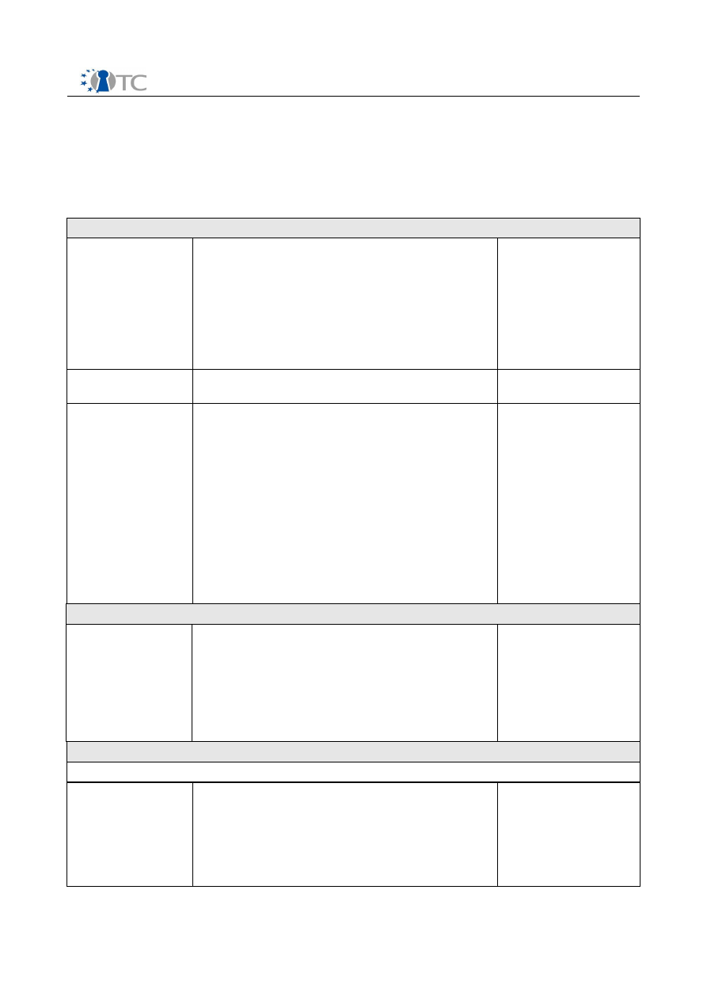

D10.3 Intermediate Dissemination Activities
Report and Dissemination Plan
(M18) April 2007
Project number
IST-027635
Project acronym
Open_TC
Project title
Open Trusted Computing
Deliverable type
Report
Deliverable reference number
IST-027635/D10.3/V1.0 Final
Deliverable title
Intermediate Dissemination Activities Report
and Dissemination Plan
WP contributing to the deliverable
WP10
Due date
April 2007 (M18)
Actual submission date
June 14, 2007
Responsible Organisation
TEC
Authors
TEC
Abstract
This document describes the dissemination
activities, including exploitable knowledge, of
the Open_TC consortium up until the present
point. It also outlines the planned activities
for the rest of the project.
Keywords
Open_TC, dissemination, Trusted
Computing, Security, L4/XEN, Trusted
Platform Module (TPM)
Dissemination level
Public
Revision
V1.0 Final
Instrument
IP
Start date of the
project
1
st
November 2005
Thematic Priority
IST
Duration
42 months
D10.3 Intermediate Dissemination Activities Report and Dissemination Plan V1.0
If you need further information, please visit our website
www.opentc.net
or contact the
coordinator:
Technikon Forschungs-und Planungsgesellschaft mbH
Richard-Wagner-Strasse 7, 9500 Villach, AUSTRIA
Tel.+43 4242 23355 –0
Fax. +43 4242 23355 –77
Email
coordination@opentc.net
The information in this document is provided “as is”, and no guarantee
or warranty is given that the information is fit for any particular purpose.
The user thereof uses the information at its sole risk and liability.
Open_TC D10.3
2/38

D10.3 Intermediate Dissemination Activities Report and Dissemination Plan V1.0
Table of Contents
1 Introduction................................................................................................................ 5
2 Intermediate Dissemination Activities........................................................................6
2.1 Overview of conferences, articles and electronic publications............................... 6
2.2 Description of major activities.............................................................................. 16
2.2.1 XEN Summit..................................................................................................... 17
2.2.2 Fostering a European academic research environment for TC ........................17
2.2.3 IPICS Summer Course ..................................................................................... 17
2.2.4 LinuxTag ......................................................................................................... 17
2.2.5 1st Workshop on Advances in Trusted Computing.......................................... 17
2.2.6 Dagstuhl Seminar – from Security to Dependability.........................................18
2.2.7 2nd Workshop on Advances in Trusted Computing.........................................18
2.2.8 First Conference on Trusted Computing, Berlin............................................... 18
3 Dissemination plan................................................................................................... 19
3.1 Overview of planned conferences, articles and electronic publications............... 19
3.2 Identified Target groups and identification of relevant venues............................ 23
3.2.1 Government and public authorities..................................................................23
3.2.2 Commercial Entities......................................................................................... 23
3.2.3 Private users.................................................................................................... 24
3.2.4 Open source software developers....................................................................24
3.2.5 Traditional commercial software developers................................................... 24
3.2.6 Hardware developers....................................................................................... 25
4 Exploitable knowledge and its Use........................................................................... 25
4.1 Introduction.......................................................................................................... 25
4.2 Overview of exploitable knowledge...................................................................... 25
4.3 Description of results............................................................................................ 28
4.3.1 CAVEAT and FRAMA-C (formerly PPC).............................................................. 28
4.3.2 Platform Secure Initialization........................................................................... 29
4.3.3 XEN with AMDV support................................................................................... 29
4.3.4 Prototype of reduced libc for Mini- OS..............................................................29
4.3.5 Prototype of library with comms stub.............................................................. 29
4.3.6 IAIK/Open_TC Java TPM Tools (jTPM-Tools).......................................................29
4.3.7 IAIK/Open_TC Java TSS Wrapper...................................................................... 29
4.3.8 IAIK/Open_TC Tccert........................................................................................ 30
4.3.9 IAIK XKMS........................................................................................................ 30
5 Cooperation with external organizations..................................................................30
6 Participation in running / labeled projects................................................................ 33
6.1 Participation in complementary EU/IST projects, Eureka...................................... 33
6.2 Participation in national projects.......................................................................... 36
7 List of Abbreviations ................................................................................................38
Open_TC D10.3
3/38

D10.3 Intermediate Dissemination Activities Report and Dissemination Plan V1.0
List of Tables
Table 1: Dissemination activities in the Open_TC project............................................... 6
Table 2: Detailed listing of intermediate dissemination activities.................................16
Table 3: Detailed listing of planned dissemination activities........................................ 23
Table 4: Exploitable knowledge achieved..................................................................... 28
Table 5: Cooperation with external organisations.........................................................32
Table 6: Participation in EU/IST projects....................................................................... 36
Table 7: Participation in national projects..................................................................... 37
Open_TC D10.3
4/38
D10.3 Intermediate Dissemination Activities Report and Dissemination Plan V1.0
1 Introduction
The purpose of this report is to collect information on the dissemination activities that
have been carried out in the Open_TC project up until this point. It also contains a plan
for upcoming activities based on a form collected from each partner as well as inputs
gathered during the first 18 month of the project. The purpose of the dissemination
plan is coordinating these activities as well as providing guidance for the partners
when carrying out the planned activities.
The dissemination activities during the reporting period have mainly been targeted
towards the researchers and developers working with different aspects of trusted
computing. This work will continue throughout the project but there will also be an
increased effort at targeting the general public and organisations providing software
and services related to this field.
Further the report contains an overview of the exploitable knowledge and its use in the
project. The focus on open source makes this an integral part of the dissemination
activities as transparency and cooperation with the open source community is an
important strategy for gaining acceptance and wide spread adoption of the results.
Open_TC D10.3
5/38
D10.3 Intermediate Dissemination Activities Report and Dissemination Plan V1.0
2 Intermediate Dissemination Activities
In the course of the project the Open_TC partners developed a dissemination and use
plan which describes both, the strategies and the activities of the consortium in
general, as well as the individual dissemination approaches of the partner
organisations. The consortium strives to promote and encourage research about
Open_TC, targeting European companies and citizens by the diffusion of information
about the project as well as state-of-the-art and evolution of related technologies.
A rough overview shown below contains a summary of all dissemination activities that
were carried out and reported during this project period. Afterwards the activities are
shown in detail in a more comprehensive table and the major activities are described.
In brief, the amount of different dissemination activities summarised in the following
table:
Activity type
International
National
Conference
21
2
Workshop
16
3
Article
7
8
Presentation
11
4
Discussion
7
1
Course
15
5
Publication
23
3
Other
14
2
Table 1: Dissemination activities in the Open_TC project
It can be seen that the majority of the dissemination activities has taken place in
international contexts. In addition to their international nature, consortium partners
have carried out their dissemination work in cooperation. The Open_TC project has
been communicated in paper and electronic media in different ways as well as in
various conferences, summits, workshops and seminars by active participation in the
organisation of these events or as invited speakers or conference paper contributors.
2.1 Overview of conferences, articles and electronic publications
The dissemination activities of the Open_TC consortium are collected below and listed
in chronological order.
Open_TC D10.3
6/38
D10.3 Intermediate Dissemination Activities Report and Dissemination Plan V1.0
Date
Type
Type of
audience
Countries
Size of
audienc
e
Partners
10/2005
Press article about the
content of Open_TC
“Wirtschafts-
nachrichten Süd”
general public
Austria
25.000
readers
TEC
11.11.2005 Informatik Kolloquium
industry
national
TUD
19.- 21.12.
2005
CollaborateCom
industry
international
TUD
Monthly
starting
01/2006
Open_TC project details
(SECOM News List /
International)
industry
ISECOM
News List/
international
5.000
ISE
17.- 18.01.
2006
XEN Summit
industry
international
~ 200
AMD, HP,
IBM, XEN
20.- 21.02.
2006
Workshop: “Fostering an
European academic
research environment for
Trusted Computing”
organized by the British
CESG and German BSI
higher
education,
research
Europe
9
RHUL, RUB,
TUD, HP,
CUCL
02/2006
Press article about the
content of Open_TC
Kleine Zeitung
general public
regional/
Austria
(Carinthia)
TEC
02/2006
Press article about the
content of Open_TC
Kärntner
Wirtschaftskammer
industry
Regional/
Austria
(Carinthia)
TEC
02/2006
Press article about the
content of Open_TC
(Advantage, electronic
publication)
general
public,
industry
Regional/
Austria
(Carinthia)
TEC
02/2006
Press article about the
content of Open_TC
(Economy; regional
magazine)
industry,
general public
Regional/
Austria
(Carinthia)
TEC
02/2006
Press article about the
content of Open_TC
(New Business)
companies,
industry
Austria
TEC
09.02.2006 Presentation on privacy and
anonymity (Free Software
and Open Source Days)
industry
international
PORT
09.- 11.02.
2006
Presentation: Linux Users
Association, Inernet
Association Academic
computing conference
higher
education
Turkey
About 50-
60
PORT
23.02.2006 Lecture on Trusted
Computing for MSc in
Information Security
higher
education
Europe
40
RHUL
Open_TC D10.3
7/38
D10.3 Intermediate Dissemination Activities Report and Dissemination Plan V1.0
Date
Type
Type of
audience
Countries
Size of
audienc
e
Partners
24.02.2006
and
01.03.2006
Analysis and discussion of
TC, and presentation of
Open_TC views (Indicare
Monitor)
industry
international
TUM, HP,
ITAS, LDV
03/2006
Press article about the
content of Open_TC
Kärntner Woche
(Newspaper and electronic
publication)
general public
National,
Austria
TEC
03/2006
it&t business (Magazine and
electronic publication)
industry,
general public
National,
Austria
TEC
03/2006
Press article about the
content of Open_TC
it&t business
research
National,
Austria
TEC
08.03.2006 Open_TC project
announcement
( Professional Security
Testers Mailing List /
International)
professional
security
testers
mailing list
international
60.000
ISE
09.03.2006 1
st
Workshop on Advances
in Trusted Computing
Industry
International
, Japan
100
IBM
13.03.2006 TUDOS Demo CD
industry
international
TUD
19.- 24.03.
2006
Introduction to the Open_TC
project, its goals, technical
principles, and the
consortium
industry
international
SUSE
24.03.2006 Article about TC and DRM
related issues.(Turkish
Linux Journal “Penguence”)
industry
Turkey
~150
read,
1000
download
ed
PORT
29.03.2006 “Open source security
testing methodology“
(Security Focus)
industry
international
ISE
29.03.2006 “The man behind OSSTMM”
(The Register)
industry
international
ISE
04/2006
Practical Taint Based
Protection - First European
Conference on Systems
(EuroSys2006)
industry
International
CUCL
07.04.2006 ISESTORM
industry
international
ISE
06.- 09.04.
2006
A 20 minute seminar about
3 promising and upcoming
new technologies, including
Trusted Computing and
Linux
industry
International
~ 400
TUB
Open_TC D10.3
8/38
D10.3 Intermediate Dissemination Activities Report and Dissemination Plan V1.0
Date
Type
Type of
audience
Countries
Size of
audienc
e
Partners
08.04.2006 Academic Computing
Conference, Yeditepe
University
Higher
education
Turkey
~ 30
PORT
18.-21.04.
2006
Presentation: EuroSys
research
international
TUD
20.04.2006 2nd International
Conference on Global e-
Security
research
international
ISE
26.04.2006 TRECK (Trust,
Recommendations,
Evidence and other
Collaboration Know-how)
track at the 21
st
ACM
Symposium on Applied
Computing
higher
education,
research
International
30
RHUL
26.04.2006 Infosecurity Europe
research,
industry
international
50
HP
01.05.2006
(to be
published
12/2006)
Trusted Computing and
Linux (Hacking Exposed
Linux 3
rd
Edition)
industry
international
ISE
02.05.2006 IBM Future Business
Summit 2006
industry
international
PORT
03.- 06.05.
2006
LinuxTag
(2 presentations at different
events)
industry,
Open Source
developers
international
100
HP, TEC,
CUCL,
SUSE
03.- 04.05.
2006
LinuxTag Conference CD,
Outline of Open_TC
industry
international
TEC
05 – 10/
2006
RHUL Trusted Computing
Discussion Group: 4 1-hour
Tutorials and 12 1-hour
Discussion Sessions
research
Europe
7
RHUL
03.- 04.05.
2006
LinuxTag Conference CD
industry,
research
international
HP
04.- 05.05.
2006
Austrian Presidency
Conference on European
Technology Platforms
industry
National,
Austria
TEC
06.05.2006 LinuxTag
industry,
research
international
SUSE, HP
08.05.2006 workshop
government
national
10
HP, RUB
11.- 14.05.
2006
Linux and Free Software
Festival
industry
international
More
than 100
PORT
16.-19.05.
2006
Fourth iTrust International
Conference on Trust
Management
research,
industry
International
RHUL
Open_TC D10.3
9/38
D10.3 Intermediate Dissemination Activities Report and Dissemination Plan V1.0
Date
Type
Type of
audience
Countries
Size of
audienc
e
Partners
20.05.2006 Grazer Linux Tag 06
community/
industry
National,
Austria
30
IAIK
22.05.2006 I-NetSec 2006 in
conjunction with IFIP TC
11's SEC'2006
industry
international
100
BME
22.- 24.05.
2006
ARTEMIS annual conference
2006
industry
international
TEC
30.05.2006 ISECOM Subscriber
discussions
corporate IT
Security
International
1000
ISE
06/2006
Paper submitted to ACM-
CCS-STC (An Open Trusted
Computing Architecture —
Secure
virtual machines enabling
user-defined policy
enforcement)
international
POLITO,
RUB, HP,
IBM
06/2006
Article about PET
demonstrator for Turkish
computer magazine
industry
Turkey
~ 30.000
PORT
07.06.2006 News List
network
security
international
10000
ISE
13.06.2006 Presentation at IEE
conference: Crime and
Security
engineers
international
600
HP, IFX
01.07.2006 High-level workshop about
project management of
European research projects
of the 6
th
framework
program organized by
Austrian Administrative
industry
international
TEC
10.- 13.07.
2007
International Course on
State of the Art and
Evolution of Computer
Security and Industrial
Cryptography
(www.cosic.esat.kuleuven.b
e/course)
business
Leuven
70
KUL
17.- 28.07.
2006
IPICS Summer Course
(www.cosic.esat.kuleuven.b
e/ipics2006)
students,
business
Leuven
144
KUL, IAIK,
RHUL
20.- 21.07.
2006
CERICS - “Workshop on
Current and Emerging
Research Issues in
Computer Security” -
Research presentation
higher
education,
research
Europe
50
RHUL
Open_TC D10.3
10/38
D10.3 Intermediate Dissemination Activities Report and Dissemination Plan V1.0
Date
Type
Type of
audience
Countries
Size of
audienc
e
Partners
31.07.–
04.08.
2006
Usenix Security
industry and
academia
International
CUCL
08/2006
IBM Research Report RZ
3655 (# 99675) available
online
1
academia,
industry,
public
International
HP, IBM,
POL, RUB
08.08.2006 Presentation at German
ministry of research and
technology
government
officers
National,
Germany
120
IFX
23.08.2006 Information Security
Summer School, Taipei,
Taiwan – Tutorial
presentation on
Trusted
Computing
Higher
education,
research
International
60
RHUL
09/2006
EMO Linux Day
industry
Turkey
PORT
09/2006
Cebit Bilişim Eurasia Fair
and Conference
industry
Turkey
PORT
05.09.2006 SEVECOM Workshop,
Budapest
research,
industry
Europe
TUD
07. –
08.09.2006
Xen Summit, San Jose, CA
industry
International
150
CUCL
11.-15.09.
2006
Seminar on Dependability
and Security, Dagstuhl
research,
academia
Worldwide
40
IBM, RUB
21.09.2006 Presentation BSI for the
German government
government
officers
Germany
15
IFX
03.10.2006 Presentation, information
Russian government
government
officers
Russia
10
IFX
05.10.2006 Presentation at IFX SW
developers group
SW- and IT
specialists
international
70
IFX
06.10.2006 Conference at Beihang
University, Peking
research
China
TUD
07.10.2006 Conference at Tsinghua
University, Peking
research
China
TUD
09.- 13.10.
2006
IEEE International
Conference on
Technologies for Homeland
Security and Safety
industry
international
PORT
1 An Open Trusted Computing Architecture — Secure Virtual Machines Enabling User-Defined
Policy Enforcement.
D. Kuhlmann, R. Landfermann, H. V. Ramasamy, M. Schunter, G. Ramunno, and D. Vernizzi.
Research Report RZ 3655 (# 99675), IBM Research, Aug 2006.
Open_TC D10.3
11/38
D10.3 Intermediate Dissemination Activities Report and Dissemination Plan V1.0
Date
Type
Type of
audience
Countries
Size of
audienc
e
Partners
12.10.2006 Paper („
Enabling secure
platforms with Trusted
Computing“
) presented in
TEHOSS 2006 IEEE
conference in Istanbul,
which is published in
conference proceedings
University
International
500
TUB
13.10.2006 Presentation to the
„Gesellschaft Informatik“ at
Fuji-Siemens in Munich
industry and
academia
Europe
40
CUCL
14.10.2006 RT Linux Workshop,
Langzhou
2
research,
industry
international
TUD
16.10.2006 Network Security
Innovation Platform
Workshop (UK Government
Department of Trade and
Industry)
Research,
industry
National
50
RHUL
19.10.2006 11
th
Nordic Workshop on
Secure IT Systems
academic
international
50
BME
19.-20.10.
2006
First Conference on Trusted
Computing, Berlin
research,
business
Europe
HP, CEA,
RHUL, POL,
IBM, IFX,
ITAS, RUB,
SUSE, TUD,
TEC
21.10.2006 CMS eUniversity Workshop
academic
Greece
15
IAIK
30.10. -
03.11.2006
Conference/Workshop
“ACM CCS / STC 2006”
research
Worldwide
40
RUB
11/2006
Chamber of Electrical
Engineers (EMO)
Monthly Technical Seminar
industry
Turkey
PORT
06-08.11.
2006
OSDI, Seattle, USA
researchers
international
TUD
07.11.2006 Open Source Business
Forum in Potsdam
Industry
International
120
CUCL
07.11.2006 ISECOM Subscriber
discussions
corporate IT
Security
International
1000
ISE
08.11.2006 Chamber of Electrical
Engineers (EMO)
Monthly Technical Seminar
industry
Turkey
20
PORT
08.- 09.11.
2006
IT Security National
Summit, Ireland
Europe
RUB
2 Keynote: “Ten Years of Research on L4-based Real-Time Systems” and Talk: “Towards
runtime monitoring in real-time systems”
Open_TC D10.3
12/38
D10.3 Intermediate Dissemination Activities Report and Dissemination Plan V1.0
Date
Type
Type of
audience
Countries
Size of
audienc
e
Partners
08.- 09.11.
2006
Workshop “WISSEC 2006”
research
Worldwide
40
RUB
10.11.2006 Article published in
Datenschutz und
Datensicherheit, Vieweg
Europe
~ 3000
subscribe
r
IFX
14.11.2006 Linux World Expo, Cologne
Industry
International
CUCL
14.-17.11.
2006
Software Defined Radio
Technical Conference 2006
– Invited conference paper
research,
industry
International
200
RHUL
16.11.2006 Booth and presentation
Security and smartcard fair
industry
specialists
international
3000
IFX
21- 23.11.
2007
EuroSys 2007
researchers
international
TUD
29.11.2006 2
nd
Workshop on Advances
in Trusted Computing
industry,
academia
International
, Japan
30
IBM
29.11.2006 Workshop paper
3
academia,
industry
International
, Japan
30
IBM
30.11.-
01.12.2006
Workshop “WATC”
research
Worldwide
40
RUB
30.11. –
03.12.2006
Corporate Technologies Fair
industry
Turkey
More
than 500
PORT
1.12. 2006 Workshop on vulnerabilities
and defense techniques
(NAC, IDS and TC)
Business
and
technical
managers
I
taly
~50
POL
05.12.2006 Presentation at German
ministry of research and
technology
research
specialists,
universities
Germany
100
IFX
07.12.2006 AFCEA Information Day
military/gover
nmental
international
More
than 150
PORT
18.12.2006 HP Day at Royal Holloway
University
Industry and
Academia
National
100
HP
21.-23.12.
2006
INET-TR Internet
Conference
industry
Turkey
More
than 100
PORT
2006
Paper contribution for
4
WATC'06
academia,
research
international
RUB
3 Flexible Integrity Protection and Verification Architecture for Virtual Machine Monitors.
B. Jansen, H. V. Ramasamy, and M. Schunter.
Second Workshop on Advances in Trusted Computing (WATC-2006), November 30 -
December 1, 2006, Tokyo, Japan. To appear.
4 Ahmad-Reza Sadeghi, Michael Scheibel, Stefan Schulz, Christian Stüble, Marko Wolf: Play it
once again, Sam - Enforcing Stateful Licenses on Open Platforms, accepted to be presented
at The Second Workshop on Advances in Trusted Computing (WATC '06 Fall).
Hans Löhr, Hari Govind V. Ramasamy, Stefan Schulz, Matthias Schunter, Christian Stüble:
Enhancing Grid Security Using Trusted Virtualization, accepted to be presented at The
Open_TC D10.3
13/38
D10.3 Intermediate Dissemination Activities Report and Dissemination Plan V1.0
Date
Type
Type of
audience
Countries
Size of
audienc
e
Partners
2006
Workshop for
5
Trusted
Computing
academia
research
International
RUB
2006
Security Architectures for
6
Software
academia
research
International
RUB
2006
Linux Day
7
academia
research
International
RUB
2006
Workshop
8
o
n Usability and
Transparency
academia
research
International
RUB
2006 -
2007
RHUL Trusted Computing
Discussion Group: 4 1-hour
Tutorials and Weekly 1-hour
Discussion Sessions
Research
Europe
7
RHUL
01/2007
HPLabs research show and
tell
Analysts
Europe
15
HP
01/2007
Article about TC: Official
magazine of Chamber of
Electrical Engineers (EMO)
“Elektrik Mühendisliği”
industry
Turkey
~ 30.000
PORT
11.01.
2007
IEEE CCNC ‘07 Conference
(DRM Workshop) paper
9
scientific
community,
R&D
personnel
International
29.-30.01.
2007
ICT Conference İstanbul
industry
Turkey
More
than 100
PORT
31.01. –
02.02.2007
Academic Computing
conference, Kütahya (3
seperate presentations)
higher
education
Turkey
More
than 100
PORT
Second Workshop on Advances in Trusted Computing (WATC '06 Fall).
5 Liqun Chen, Rainer Landfermann, Hans Löhr, Markus Rohe, Ahmad-Reza Sadeghi and
Christian Stüble:
A Protocol for Property-Based Attestation,
accepted for The First ACM
Workshop on Scalable Trusted Computing (STC'06).
Ahmad-Reza Sadeghi, Marcel Selhorst, Christian Stüble, Christian Wachsmann and Marcel
Winandy:
TCG Inside? - A Note on TPM Specification Compliance,
accepted for The
First ACM Workshop on Scalable Trusted Computing (STC'06).
6
Ulrich Huber, Ahmad-Reza Sadeghi, Marko Wolf:
Security Architectures for Software
Updates and Content Protection in Vehicles,
accepted for Automotive Safety and
Security 2006, Stuttgart, Germany.
Ammar Alkassar, Michael Scheibel, Ahmad-Reza Sadeghi, Christian Stüble, Marcel
Winandy:
Security Architecture for Device Encryption and VPN,
accepted for ISSE
(Information Security Solution Europe) 2006.
7 Ahmad-Reza Sadeghi, Michael Scheibel, Christian Stüble, Marcel Winandy:
Design and
Implementation of a Secure Linux Device Encryption Architecture,
accepted to be
presented at Linux-Tag 2006.
8 Sebastian Gajek and Ahmad-Reza Sadeghi:
Client Authentication in Federations Using
a Security Mode,
accepted to be presented at Toward a More Secure Web - W3C
Workshop on Usability and Transparency of Web Authentication. Available at
http://www.w3.org/2005/Security/usability-ws/program
.
9 Efficient design of interpretation of REL license using Expert Systems
Open_TC D10.3
14/38
D10.3 Intermediate Dissemination Activities Report and Dissemination Plan V1.0
Date
Type
Type of
audience
Countries
Size of
audienc
e
Partners
02/2007
Submitted paper to Usenix
2007. Waiting for reply as
to whether it has been
accepted or not. Usenix is
in Santa Clara, CA, June 17–
22
Industry,
Government,
Academia
International
HP
02/2007
Submitted paper to
European The eChallenges
e-2007 Conference &
Exhibition
Industry,
Government,
Academia
European
HP
07.02.2007 Workshop on security for
business applications
Business and
technical
managers
Italy
~100
POL
12.- 15.2.
2007
TC Panel Discussion at
“Financial Cryptography
2007”
Research/
Industry
Worldwide
60
RUB
12.02.2007 I4 conference in Monteray
Industry
International
100
HP
15.02.2007 Lecture on Trusted
Computing for MSc in
Information Security –
Software Security Course
Higher
education
Europe
40
RHUL
23.- 24.2.
2007
Chamber of Electrical
Engineers Linux Days,
Eskişehir (2 separate
presentations)
higher
education /
industry
Turkey
More
than 300
PORT
26.- 27.2.
2007
Workshop on Trusted
Computing from a
European Perspective – The
Impact on the Public Sector
– Bonn, Germany
Representativ
es from the
business and
scientific
communities
and public
administratio
n dealing with
matters
related to
trusted
computing
Europe
80
HP,POL
26.-2 7.2.
2007
EU Workshop
“Deployment of TC for
Government Organizations”
Research/
Government
Europe
100
RUB
01.03.2007 Chamber of Electrical
Engineers Seminar, Ankara
industry
Turkey
~ 30
PORT
01.03.2007 Article about TC: Official
magazine of Chamber of
Electrical Engineers (EMO)
“Elektrik Mühendisliği”
industry
Turkey
~ 30.000
PORT
Open_TC D10.3
15/38
D10.3 Intermediate Dissemination Activities Report and Dissemination Plan V1.0
Date
Type
Type of
audience
Countries
Size of
audienc
e
Partners
03.-04.03.
2007
Free Software and Open
Source Days, İstanbul
industry
International
More
than 50
PORT
05.–06.03.
2007
FP7 Security Theme
Information Day, Ankara
military /
research
International
~ 30
PORT
15.-21.03.
2007
Presentation of Significant
European Projects on TC at
CeBIT (Open_TC, EMSCB)
IT-Industry
Worldwide
RUB
20.03.2007 RE-Trust workshop . RE-
TRUST project; this is an
EU-funded research project
lead by the University of
Trento on Remote
EnTrusting by RUn-time
Software auThentication.
For more details on this
project see: http://re-
trust.dit.unitn.it/
Academia and
Industry
Europe
HP
21.03.2007 Seminar to be given at the
Department of Computer
Science and Software
Engineering, University of
Canterbury, New Zealand,
entitled: 'Trusted
Computing: A universal
security infrastructure?'
Higher
education,
Research
National
25
RHUL
28.03.2007 Talk to the New Zealand
Information Security Forum,
Auckland, New Zealand,
entitled: “Trusted
Computing: Putting a
Security
Module on Every Desktop”
Industry
National
RHUL
28.03.2007 Seminar to be given at the
Centre of Digital Enterprise
(CODE), University of
Auckland, New Zealand,
entitled: “Trusted
Computing: A Universal
Security Infrastructure?”
Research
National
RHUL
2007
we plan to issue an
Open_TC newsletter
industry,
government
international
All, as
authors
Table 2: Detailed listing of intermediate dissemination activities
2.2 Description of major activities
Open_TC D10.3
16/38
D10.3 Intermediate Dissemination Activities Report and Dissemination Plan V1.0
2.2.1 XEN Summit
AMD attended the XEN summit to get the relevant people for XEN security and hence
for DRTM directions together to talk about directions a DRTM approach should take.
Main partners are XEN, HP, IBM. An additional goal was it to discuss further
development of AMDV/XEN abstraction.
2.2.2 Fostering a European academic research environment for TC
This workshop was attended by partners RHUL, RUB, TUD, HP and CUCL. HP took part
in the organisation of the workshop, while presentations were given by RHUL (Using
mobile devices in a secure environment), RUB (A Security Architecture for
Enforcement and Transfer of Licenses) and CUCL (The Xen Project). The outcomes of
the workshop included knowledge of the public sector requirements regarding TC,
dissemination of Open_TC work and participation in a European working group on TC.
2.2.3 IPICS Summer Course
COSIC, a research group from the Katholieke Universiteit Leuven conducting research
on computer security and industrial cryptography, organised a summer course with
the focus on privacy towards the end. The first week of the summer course was
dedicated to general information on communication security while the second week
focused on secure implementation and secure applications.
(www.cosic.esat.kuleuven.be/ipics2006)
2.2.4 LinuxTag
The LinuxTag 2006 is one of the leading European events for Free Software, Linux and
Open Source. During this event, current thematic areas, products and projects have
been discussed; major players in this field, as for instance HP and SUN contributed,
presenting inter alia Groupware-Solutions and Content Management Systems. More
than a half of the 250 sessions have been presented by international speakers from
South Africa, Argentina, Japan, United Kingdom, France, and the United States, among
them Open_TC Consortium members with their presentations. With more than 90
exhibiting free projects LinuxTag is the most important platform for Open-Source-
Projects worldwide.
2.2.5 1
st
Workshop on Advances in Trusted Computing
IBM organised a workshop in Japan in March 2006. Both projects aim at Open Source
Open_TC D10.3
17/38
D10.3 Intermediate Dissemination Activities Report and Dissemination Plan V1.0
trusted computing solutions. As a consequence, we agreed that we will try to set up a
closer collaboration. We plan to exchange technical specifications and we have issued
an invitation to the Japanese researchers to join the September´s general assembly.
2.2.6 Dagstuhl Seminar – from Security to Dependability
The Dagstuhl Seminar addressed questions concerning safety, fault-tolerance and
security in computing. Despite the research efforts of the last decades, the vast
progress, for example in the field of cryptography, and the impressive security
technology, made that it is deployed with modern operating systems but security
problems have not gone away. The possibility of the lack of integration was examined
especially in terms of fault tolerance .
http://www.dagstuhl.de/de/programm/kalender/semhp/?semid=28534
2.2.7 2
nd
Workshop on Advances in Trusted Computing
The Second Workshop on Advances in Trusted Computing (WATC) was held in Tokyo,
Japan from
November 30
th
through December 1
st
2006
. The Workshop was devoted to
the dissemination and further development of the boundary areas between trusted
computing and information security. This is the second instalment of an informal
workshop series that started in March 2006. The workshop aims at bringing together
researchers and practitioners from various areas working on trusted computing and to
be instrumental in shaping the identity of the Trusted Computing community. The
workshop was open to all interested people. The Xen security services framework
designed by IBM was presented. IBM also actively pursued opportunities for
collaboration with the research group on Trusted Computing at the IBM Tokyo
Research Lab. A first concrete step in this direction has been taken in the form of a
planned integration of the Xen security services developed by the IBM Zurich group
and the validation service developed by the IBM Tokyo research group. We continue to
investigate options of collaborations with other entities within and at the outside of
IBM.
2.2.8 First Conference on Trusted Computing, Berlin
From 19.-20. October 2006, the first conference "The World of Trusted Computing" was
held at the German Ministry of Economics and Technology (BMWi), Berlin. Trusted
Computing experts addressed the current aspects, benefits, and challenges of Trusted
Computing with regard to their economic and technical aspects as well as its potential
risks. The attendees had the opportunity to discuss and exchange information with
experts on already existing experiences in this domain during the conference.
Information on how and to what extent Trusted Computing is applied in practice and
also what can be expected in the future, was shown. The public view of trusted
computing was discussed and it was agreed that public relation is an important part
for any one who is involved in trusted computing as there are possible contentious
uses for the technology. Further workshops will be organised on the theme as a part of
workpackage 10.
Open_TC D10.3
18/38
D10.3 Intermediate Dissemination Activities Report and Dissemination Plan V1.0
3 Dissemination plan
The dissemination activities will continue throughout the remainder of the project,
further emphasis will be put on reaching the general public and those not directly
involved with trusted computing. A considerably larger installed base of the necessary
hardware components is expected in the near future making it possible for a larger
base of developers and other computer savvy persons to try out and experiment with
trusted computing. It is therefore important to provide targeted information, and, if
necessary, feedback, to promote the results of Open_TC as the solution of choice for
trusted computing.
3.1 Overview of planned conferences, articles and electronic publications
The planned dissemination activities of the Open_TC consortium are collected below
and listed in a chronological order. Additional activities have to be expected when the
partners have prepared more detailed plans for their work. Invitations to contribute to
both publications and conferences are expected as the project receives more and
more attention throughout Europe and the rest of the world.
Dates
Type
Type of
audience
Countries
Size of
audience
Partners
04/2007
TUBITAK Marmara
Research Center
Technology Seminar
research
Turkey
More than
100
PORT
04/2007
IBM Partners Meeting,
İstanbul
industry
Turkey
PORT
04/2007
Gebze Technopark
Technology Seminar
industry
Turkey
PORT
10.04.2007 METU, Invited Lecture
for Technology
Management Course
higher education
/ industry
Turkey
About 20
PORT
05/2007
Grazer Linux Tag 07
community/
industry
Austria
IAIK
05/2007
Bilkent University,
Ankara
higher education
Turkey
PORT
05/2007
METU, Ankara
higher education
Turkey
PORT
03.- 06.05.
2007
Linux and Free
Software Festival
industry
Internatio
nal
PORT
08- 10.5.
2007
TUBITAK has submitted
a workshop proposal
with topic „future of
trusted computing“
international
Conference on Security
of Information and
Networks (SIN 2007)
University
Internatio
nal
>1000
TUB
Open_TC D10.3
19/38
D10.3 Intermediate Dissemination Activities Report and Dissemination Plan V1.0
Dates
Type
Type of
audience
Countries
Size of
audience
Partners
21- 23.05.
2007
UbiSafe Computing
2007 - The 2007 IEEE
International Symposium
on Ubisafe Computing,
Ontario, Canada, “Mobile
Agents and the Deus
Ex Machina”
Higher education,
research
Internatio
nal
RHUL
06/2007
METU Technopolis
industry
Turkey
PORT
07/2007
Article about PET
demonstrator for EMO
Ankara Branch
Newsletter Special 32
page Issue on Open
Source Software
industry
Turkey
About
8000
PORT
10.-13.07.
2007
International Course on
State of the Art and
Evolution of Computer
Security and Industrial
Cryptography
(www.cosic.esat.kuleuv
en.be/course)
business
Leuven
70
KUL
30.07.-
02.08.2007
IFIPTM 2007 - Joint
iTrust and PST
Conferences on
Privacy, Trust
Management and
Security, Moncton,
New Brunswick,
Canada
Higher education,
Research,
Industry
Internatio
nal
RHUL
09-15.09.
2007
Session to be given at
FOSAD 07 (Seventh
International School on
Foundations of
Security Analysis and
Design), Bertinoro,
Italy, entitled “Trusted
Mobile Platforms”
Research
Internatio
nal
RHUL
09-15.09.
2007
Paper on “Trusted
Mobile Platforms” to
appear in the
proceedings of FOSAD
07 (Seventh
International School on
Foundations of
Security Analysis and
Design), to be
published in the
Springer LNCS series
Research
Internatio
nal
RHUL
Open_TC D10.3
20/38
D10.3 Intermediate Dissemination Activities Report and Dissemination Plan V1.0
Dates
Type
Type of
audience
Countries
Size of
audience
Partners
07-09.11.
2007
TUBITAK will be
submitting a paper to
ISCIS (22
nd
International
Symposium on
Computer and
Information Sciences)
related to trusted
computing.
Mainly
universities and
academicians
Internatio
nal
About 800
TUB
21-23.11.
2007
EuroSys 2007
researchers
internatio
nal
TUD
2007
Conference paper
submission
10
researchers
Internatio
nal
CEA
2007
Paper on the C code
static analysis tool
industry
Internatio
nal
CEA
2007
Publication
researchers,
industry
Internatio
nal
CEA
2007
Publication on CEA
intranet
employees of
CEA
CEA
CEA
2007
Publication
industry
national
CEA
2007
Paper contribution
11
academia,
research
internatio
nal
RUB
2007
Paper contribution
12
academia,
research
internatio
nal
RUB
2007
Presentation
internal:
laboratories,
department and
company
meetings
CEA
CEA
Q1 2007
Protecting OS with
Immutable Memory
industry
Internatio
nal
CUCL
10 CEA-LIST intends to publish the results of its activities within Open_TC in the form of paper
submissions to conferences dealing with software engineering and static analysis.
Candidates are the 2007 CAV, SAS and TACAS conferences.
11 Sebastian Gajek, Ahmad-Reza Sadeghi, Christian Stüble and Marcel Winandy:
Compartmented Security for Browsers - Or How to Thwart a Phisher with Trusted
Computing,
accepted for The Second International Conference on Availability, Reliability
and Security ARES 2007.
12
Liqun Chen, Alberto Escalante, Hans Löhr, Mark Manulis, Ahmad-Reza Sadeghi:
A Privacy-
Protecting Multi-Coupon Scheme with Stronger Protection against Splitting,
accepted for the 11th International Conference on Financial Cryptography and Data Security
(FC 2007), 12-15 February, Trinidad/Tobago.
Open_TC D10.3
21/38
D10.3 Intermediate Dissemination Activities Report and Dissemination Plan V1.0
Dates
Type
Type of
audience
Countries
Size of
audience
Partners
Q3 2007
writing a book chapter
„Trusted computing
with Linux“ in „Hacking
Exposed Linux“ 3
rd
edition which is
directed by ISECOM.
The book will be
published by Wiley &
Associates
General public
internatio
nal
TUB
March 11
th
-12
th
2008
Trust2008:
International
Conference on Trusted
Computing to be held
in Villach, Austria
academic
teachers,
students,
engineers
Europe /
WW
300 – 400
participan
ts
TEC
March 10
th
-14
th
2008
Trust2008;
International Spring
School on Trusted
Computing
students
Europe /
WW
40-60
participan
ts
TEC
2005-2010 Intensive cooperation
and training activities
with universities and
similar;
Development support
academic
teachers ,
students
Europe /
WW
About 25
contacs to
different
universiti
es and
research
institutes
IFX
2007-2009 ca. 20 Public
presentations
conference
visitors, experts
and layman
Europe/
WW
10-500
IFX
2007-2009 ca. 10 high level
presentation
decision makers,
laymen, politics
Europe/
WW
ca. 10-50
listeners
IFX
2007-2009 Individual customer
training events
technical experts
Europe/
WW
Ca 400
potential
customer
s
IFX
2007-2009 About 15 journals
technical publications
technical experts
Europe/
WW
ca. 40000
subscribe
rs
IFX
2007-2009 About 10 high level
journal publications
decision makers,
laymen,
journalists
Europe/
WW
ca. 5000
subscribe
rs
IFX
Continuous
ly
maintaining the web
site „trustedforum.org“
from the project start,
and populates the web
with relevant news,
organizations,
seminars and blogs.
General public
Internatio
nal
TUB
Open_TC D10.3
22/38
D10.3 Intermediate Dissemination Activities Report and Dissemination Plan V1.0
Dates
Type
Type of
audience
Countries
Size of
audience
Partners
Continuous
ly
Active participation in
TCG standardisation
and management
meetings
TCG
internatio
nal
POL
Table 3: Detailed listing of planned dissemination activities
3.2 Identified Target groups and identification of relevant venues
Three key groups of end users have been identified by the consortium:
•
Government and public authorities
•
Commercial entities
•
Private users
In addition to these groups there is also big interest coming from software developers
and other organisation that will use the results of Open_TC in their own products.
•
Open source software developers
•
Traditional commercial software developers
•
Hardware developers and equipment manufacturers
The majority of the dissemination activities target several of these groups
simultaneously, but there are differences between the groups that need to be
recognised and addressed when preparing for a dissemination activity. Standardisation
organisations are addressed separately as a part of sub workpackage 10a and is not a
part of this report.
3.2.1 Government and public authorities
E-Government is an important topic for any public authority, and large advances have
been made in most European countries. The content is still mostly informational as
there are few widely deployed solutions for identification and exchange of sensitive
information. The open and transparent nature of Open_TC and its results offers public
authorities a platform to build there future solutions on. Many of these governments
and authorities have very decentralised structures with widespread offices all over
the country. The administration and the share of sensitivity, information and the
infrastructure it requires, can be advanced by the results of the Open_TC project.
These organisations have large IT departments that attend conferences and fairs
where they can be approached. It is also important to address the decision makers
directly such as those holding public office. An important asset is the network towards
public authorities, built up by the larger partners of the project. TEC researches the
opportunities of Trusted Computing for the Austrian Government on behalf of the
Austrian Ministry for Traffic, Innovation and Technology (BMVIT).
3.2.2 Commercial Entities
The costs for administering and securing the IT security of an organisation are
steadily growing, as the reliance of on IT systems increases. The Open_TC project can
offer a unified, virtualised platform on which to run both clients and servers. Secure
virtualisation offers reduced heterogeneity through standardised virtual hardware
interfaces while offering unsurpassed client level protection from intentional and
accidental security incidents. It also offers the possibility to use shared resources such
Open_TC D10.3
23/38
D10.3 Intermediate Dissemination Activities Report and Dissemination Plan V1.0
as an employees private computer or the server farm of a third party for processing
confidential data. Conferences, journals and fairs play very important roles but also
contacts are built up through marketing and sales departments .
3.2.3 Private users
For many private users trusted computing is connected to DRM and Big Brother type of
software. It is therefore important to emphasise the transparency of the project results
and efforts and to present the benefits, also for the private end user. The Open_TC
implementation of trusted computing is following an opt in model so TC is never forced
upon the user. Separate virtual instances of an OS for different family members can be
used to increase the security and privacy of the individual user. Concerning that the
information on public websites such as
www.opentc.net
and
www.trustedforum.org
will
play an important role . Project members also need to be involved in the public debate
through blogs and mailing lists where much negative and biased information is spread.
Traditional print media such as cT, published in Germany, also play an important role
in forming the public opinion, a good relation with traditional media is therefore of
very great interest.
3.2.4 Open source software developers
Open source software developers are a very important target group for Open_TC. A
large part of the software stack needed in Open_TC has been released under various
open source software licenses. Interaction with the OSS community is important to
ensure support for the project and its results and to achieve a widespread
implementation of the Open_TC platform. The OSS community also provides peer
review of the Open_TC results, which is an important function to achieve the level of
transparency needed for acceptance among the public and the OSS community. The
venues are mostly the same as those for private users, public websites and mailing
lists but also technical papers and journals.
3.2.5 Traditional commercial software developers
Several new business models have been established on the back of open source
software and it is the firm belief of the Open_TC consortium that the results will be
used in a variety of software types besides those foreseen by the project members.
Key factors that have been identified as very important to ensure a fast uptake of the
Open_TC results are:
•
Stable and well documented API
•
Clear and if possible unified licensing structure
•
Security updates back ported to previous versions
Conferences, papers, journals and fairs play a big role in reaching the users. Sales and
marketing issues are other important interfaces. Collaborations creates other
opportunities to directly interact with developers and other technical personnel.
Open_TC D10.3
24/38
D10.3 Intermediate Dissemination Activities Report and Dissemination Plan V1.0
3.2.6 Hardware developers
The Open_TC results are expected to be used, not only on traditional PC hardware, but
also in a variety of embedded systems. Such systems are often connected to a
sizeable investment in design, as well as with long life spans. A stable API with back
ported security updates is therefore important again. A scalable foot print tailored to a
specific purpose can also be of importance on this market. See Traditional commercial
software developers above for dissemination venues.
4 Exploitable knowledge and its Use
4.1 Introduction
In the course of the project the Open_TC partners are developing a use and
exploitation plan for the results reached within the Open_TC project. This plan is tightly
connected to the dissemination activities in the project through the open nature of the
results. Parts of the internal deliverable “Intermediate exploitation plan” is therefore
presented here. It describes the currently available results of the Open_TC project as
well as the exploitation taken place or planned in the near future by the partners.
4.2 Overview of exploitable knowledge
During the first year of Open_TC project the project partners achieved a great deal of
exploitable knowledge. The details of the products including their patents or other IPR
issues are listed below.
Exploitable
Knowledge
(description)
Exploitable
product(s) or
measure(s)
Sector(s) of
application
Timetable
for comm-
ercial use
Patents or
other IPR
Owner /
partner(s)
involved
Static C code
analyser
CAVEAT
safety critical
sectors
including
aeronautics,
space, railways,
nuclear power
plants, medical
devices.
Undefined
currently
(point wise
agreements)
Deposit of a
CAVEAT
version at
an usher
CEA
Static C code
analyser
FRAMA-C
(formerly PPC)
identical
no plans so
far
none
CEA
Open_TC D10.3
25/38
D10.3 Intermediate Dissemination Activities Report and Dissemination Plan V1.0
Exploitable
Knowledge
(description)
Exploitable
product(s) or
measure(s)
Sector(s) of
application
Timetable
for comm-
ercial use
Patents or
other IPR
Owner /
partner(s)
involved
Prototype
Implementation
for Platform
Secure
Initialization
using a DRTM
Platform Secure
Initialization
Servers,
Desktops
2008 and
ongoing
No
particular
plans for
patents so
far, IP rights
are at AMD
No direct
partner
involvemen
t in
Open_TC.
Sync with
XEN and L4
people
about
directions
happened.
Consultatio
ns with
external
partners
underway.
Abstraction
layer between
AMDV and XEN
XEN with AMDV
support
Server
Virtualization
Ongoing
No
particular
plans for
patents so
far, IP rights
are at AMD
Cooperation
between
AMD and
XEN
Partial libc
support for Xen
Mini-OS
Prototype of
reduced libc for
Mini- OS
Universal (OS
virt.)
2008
None,
intended
release as
OSS
HP,
CUCL
Stub for IPC
based, socket-
like
communication
between Xen
domains
Prototype of
library with
comms stub
Universal
(OS virt.)
2008
None,
intended
release as
OSS
HP
Expertise in
trusted
computing
technology
Delivery of
masters level
course in TC
higher
education
January 2007
(start)
-
RHUL
MPEG
Standardization
Open Release
MAF
components of
MPEG-21: REL,
Event Reporting
2009
-
DMP,
Universitat
Pompeu
Fabra,
DRM Inside
(reported
by LDV)
Trusted
Computing
computing base
TEC transferred
its Knowledge
Suite onto
Trusted
Computing
plattforms
Secure Web
Services
2008 and
beyond
No
TEC
Open_TC D10.3
26/38
D10.3 Intermediate Dissemination Activities Report and Dissemination Plan V1.0
Exploitable
Knowledge
(description)
Exploitable
product(s) or
measure(s)
Sector(s) of
application
Timetable
for comm-
ercial use
Patents or
other IPR
Owner /
partner(s)
involved
Framework for
security
management
Technology
developed
under Open_TC is
expected to
influence IBM's
system
management
products
data center
management
corporate
computing at
home
Post-2009
Yes
IBM (owner)
Security metrics Auditing Services,
Procurement
Services, Product
Labeling
IT, banking
consultancy,
finance/auditing
2007
None. Open
Source
License
ISECOM
Trust Metrics
Computerized
Trust decision
making
sales,
auctions,
financing,
loans
2007
None. Open
Source
License
ISECOM
set of command
line utilities to
interact with the
system's TPM
IAIK/Open_TC
Java TPM Tools
(jTPM-Tools)
software
development
2006
None, open
source
IAIK
object oriented
Java API for
interaction with
the TCG
Software Stack
(TSS) for Java
applications
IAIK/Open_TC
Java TSS Wrapper
software
development
2006
None, open
source
IAIK
Use of TPM as
an additional
authentication
factor
Strong
authentication to
Linux server
financial/
government
2008
A materials
patent is
planned for
2008
(reported
by INTEK)
tool to create
special types of
certificates and
certificate
extensions as
specified by the
Trusted
Computing
Group
IAIK/Open_TC
TCcert
software
development
2006
None,
free for
research,
education
and
evaluation
IAIK
XKMS PKI
protocol
implementation
IAIK XKMS
software
development
end of 2006
None,
free for
research,
education
and
evaluation
IAIK
Open_TC D10.3
27/38
D10.3 Intermediate Dissemination Activities Report and Dissemination Plan V1.0
Exploitable
Knowledge
(description)
Exploitable
product(s) or
measure(s)
Sector(s) of
application
Timetable
for comm-
ercial use
Patents or
other IPR
Owner /
partner(s)
involved
High Security
chip technology
like smartcards
Dedicated
security
solutions;
Developing
trusted
computing
solutions for
specific use areas
industrial
platform
integrity,
trusted players
ongoing
Standard
security
patent
portfolio
IFX and
others
cure Firmware
SW-technology
Small trust and
authentication
solutions
Automotive,
industrial
control
ongoing
Standard
security
patent
portfolio
IFX and
others
Integrated Trust
solutions for non
PC platforms
TC for mobile
phones,
trusted PDAs,
Trusted Player
intelligent
mobile devices
ongoing
Standard
security
patent
portfolio
IFX and
others
Preliminary
system
description for
commercial
version of EFS
Dual licensed EFS
software
1. Defense
2. Medical
3.
Governmental
2009
2010
Dual open
source/com
merical
license
model
PORT
Preliminary
system
description for
trusted file
shredding
Dual licensed
software
Governmental
2009
2010
Dual open
source/com
mercial
license
model
PORT
Table 4: Exploitable knowledge achieved
4.3 Description of results
The descriptions of the main outcomes in exploitable knowledge are described below.
4.3.1 CAVEAT and FRAMA-C (formerly PPC)
CEA-LIST aims at developing tool prototypes that implement advanced software
technologies. The Open_TC project contributes to improve CEA-LIST tools and lead
them to commercial versions. Static and dynamic analysis tools are produced by the
CEA-LIST LSL laboratory, and the new C static analyser PPC might become a future
innovative product. Before reaching this state, it needs much research and
development, funded by international, national and customer specific projects. During
the last steps of industrialisation we will certainly require the aid of a software
Open_TC D10.3
28/38

D10.3 Intermediate Dissemination Activities Report and Dissemination Plan V1.0
integrator and distributor to solidify and market the tool.
The CAVEAT C code static analyser belongs to the same category of tools and is
currently directly distributed pointwise to customers.
4.3.2 Platform Secure Initialization
The exploitable result is a software prototype to enable our partners (like HP, IBM,
Microsoft, etc.) to build a system running trusted software from a DRTM using AMD
processor hardware. The product is a prototype and no final product, because it has to
be integrated with a boot loader or the BIOS and this is platform specific. Systems
running from a (hardware based) DRTM are not available on mass market now so the
innovation is in this. AMD talks to its partners and customers in the industry about this
to exploit the DRTM feature. This esp. addresses server vendors and operating
system/hypervisor vendors. Exploitation of the DRTM prototype will happen via
licensing the solution to partners so that they can create products. Licensing under an
open license to the public is to be decided.
4.3.3 XEN with AMDV support
The abstraction layer between XEN and AMDV allows XEN to use the AMD hardware
support for full virtualisation. The AMDV/XEN abstraction layer is in XEN and available
for everybody’s use.
4.3.4 Prototype of reduced libc for Mini- OS
Mini-task OS support environment for Xen a working internal prototype with support
limited to specific set of applications.
4.3.5 Prototype of library with comms stub
Generic Xen communication library is a working internal prototype.
4.3.6 IAIK/Open_TC Java TPM Tools (jTPM-Tools)
The jTPM Tools provide a set of command line utilities to interact with the system's
TPM. The tools are based on the IAIK/Open_TC jTSS Wrapper and the IAIK/Open_TC
TCcert library.The most important features, distinguishing the jTPM Tools from other
TPM utilities, are the ability to create Attestation Identity Keys (AIKs) and AIK
certificates as well as the ability to extract the Endorsement Key (EK) certificates from
Infineon 1.1b and 1.2 TPMs.
4.3.7 IAIK/Open_TC Java TSS Wrapper
The Java TSS Wrapper provides an object oriented Java API for interaction with the TCG
Software Stack (TSS) for Java applications. The IAIK/Open_TC jTSS Wrapper is
developed and maintained at the Institute for Applied Information Processing and
Open_TC D10.3
29/38
D10.3 Intermediate Dissemination Activities Report and Dissemination Plan V1.0
Communication (Institut für Angewandte Informationsverarbeitung und
Kommunikation, IAIK, http://www.iaik.at/) at Graz University of Technology
(
http://www.tugraz.at/
).
4.3.8 IAIK/Open_TC Tccert
IAIK/Open_TC TCcert is a software tool which enables one to create special types of
certificates, as specified by the Trusted Computing Group.
4.3.9 IAIK XKMS
IAIK Trusted Computing labs release an implementation of the XML Key Management
Specification (XKMS) (
http://www.w3.org/TR/xkms2/
). As suggested by the TCG in their
"Reference Architecture for Interoperability" document: "XKMS provides the most
attractive solution for credential management for existing CAs in the PKI industry."
Thus, XKMS is a prime candidate as a foundation of a Trusted Computing enabled
public key infrastructure. This release does not (yet) contain the Trusted Computing
specific classes. It is a generic build, intended to stimulate public interoperability
testing with other XKMS implementations. This release is an alpha build and obviously
still buggy. IAIK XKMS is available for download at the Trusted Java Sourceforge
website at:
http://trustedjava.sourceforge.net
5 Cooperation with external organizations
In addition to the various dissemination activities reported above, the Open_TC
consortium has been in close cooperation with external organisations. The involved
partners and their activities are listed below.
Date
Type
Cooperation
partners
Countries
addressed
Partners
Ongoing
activity
Participating in the
standardization work of
the Trusted Computing
Group (TCG); bringing
current TCG pre-standard
activities early into the
Open_TC work and
activities
Research, Higher
education
HP
Open_TC D10.3
30/38
D10.3 Intermediate Dissemination Activities Report and Dissemination Plan V1.0
Date
Type
Cooperation
partners
Countries
addressed
Partners
Ongoing
activity,
multiple
events per
year
Participating in the
standardization work of
the Trusted Computing
Group (TCG); bringing
current TCG pre-
standard activities early
into the Open_TC work
and activities
TCG
international
IFX, HP, IBM, AMD,
POLITO, IAIK
01/2006
Full cooperation within
the project Berkely
trust
industry
international
IFX
18.01.
2006
Workshop
TSC consortium
International
TEC
02/2006
03/2006
addon to the eMobility
workplan, several
emails between
February and March
2006
European
Commission,
eMobility Group
IFX, RUB, TUD, RHUL
10.04.
2006
Cooperation with
Technical University of
Darmstadt / Germany
University of
Darmstadt,
Germany
Germany
IFX
21.04.
2006
Meeting and common
research seminar
Higher Education
RUB, IFX
24.04.
2006
Meeting
Research, Higher
education
HP
12.5.
2006
Workshop with Portakal
Internal
workshop
National
TUB, PORT
30.05.
2006
Cooperation with
University Karlsruhe
University of
Karlsruhe,
Germany
Germany
IFX
03.-13.06.
2006
Presentations in Korea;
e.g. With Samsung, LG,
Postech
University,
Daegu Gyeongbuk
industry and
researchers
TUD
26.-30.06.
2006
Presentation of our L4
work, Nokia, Helsinki
industry
TUD
20.08.
2006
L4 Presentation, Intel,
USA
industry
international
TUD
19-25.08.
2006
European
summer
school on Trusted
Infrastructure
technologies
CESG (UK), BSI
(DE)
RHUL, RUB, HP,
CUCL, TUD, POL
03-08.09.
2006
European
summer
school on Trusted
Infrastructure
technologies
higher education
international
RHUL, RUB, HP,
CUCL, TUD
Open_TC D10.3
31/38
D10.3 Intermediate Dissemination Activities Report and Dissemination Plan V1.0
Date
Type
Cooperation
partners
Countries
addressed
Partners
02.11.
2006
OSLO+TC
demonstration, Intel,
Hillsboro, USA
industrial
international
TUD
12/2006
Dresden Silicon,
Dresden
Industry
TUD
06.03.
2007
Workshop with Portakal
about implementation
issues and WP5-WP6
integration
Internal
workshop
National
RUB, Nokia
14.03.
2007
Microsoft Redmond
Industry
TUD
01/2006 –
04/2007
Telephone conferences;
discussions (25 2-hour
telephone conferences)
Software Define
Radio forum;
SDR Security
Working Group
international
RHUL
01/2006 –
10/2006
Discussions, 5 2-hour
telephone conferences
and a half-day meeting
Vodafone, TCG
MPWG (Mobile
Phone Work
Group)
RHUL
2006-
2010
Presence and influence
in standardisation
committes
OMTP, OMA
international
IFX
2006-
2010
Standardisation for
embedded processors
with integrated trusted
computing
industry,
research
international
IFX
Since
01/2007
Cryptographic Research
Research
RUB, Philips
Since
02/2007
Research on Trusted
Channels
Research
Attending correlation
meetings and
exchanging information
higher education
Austria
TEC
Email contact via David
Jennings
OMTP
IFX
Take part in OMTP
conference calls and
meetings on hardware
security, and check that
the WP8 Open_TC
documents are
consistent with OMTP
specifications and
proposals as they
become available
industry,
research
international
IFX
Table 5: Cooperation with external organisations
Open_TC D10.3
32/38

D10.3 Intermediate Dissemination Activities Report and Dissemination Plan V1.0
6 Participation in running / labeled projects
6.1 Participation in complementary EU/IST projects, Eureka
ITEA
€-confidential
Trusted SW execution based on COTS.
Trusted Security Platform to secure multi kind of
application and to provide a trustworthy
execution environment; Develop a safe and
trustworthy security platform that will allow to
control and to ensure a trust execution of
security services (authentication, ciphering, …)
for sensitive applications (PMR, e-vote, e-bank,
…) running on COTS.
CEA (labeled but
waiting for financing)
GGCC
New C Compiler
CEA (labeled and
financed)
TECOM
R&D from a family of HW/embedded SW silicon
components enforcing secure and trusted
computing for the areas of consumer, computer,
telecommunications, and wireless.
Development of a trust concept and architecture
elements usable in other European industrial
segments such as automotive, industrial,
aeronautics (especially in their content
acquisition and payment, ticketing, and DRM
aspects)
Relevant European contributions related to
Trusted Computing standards while keeping
interoperability with existing US-led or Asian
initiatives.
IFX, TEC (labeled but
waiting for financing)
MEDEA+
TSC
Trusted Secure Computing was recently labeled
with 2A502 by the public authorities for contract.
TSC deals with the deployment of PC oriented
Trusted Computing usage and applications. It will
also sponsor the compliance testing of realized
TC HW and SW against the TCG specification to
give the users trust in the correctness of their
applications.
TEC, IFX, RUB
IST FP6
IPs
PRIME
Privacy and Identity Management for Europe
To research and develop approaches and
solutions for privacy-enhancing identity
management that can make the European
citizens empowered to exercise their privacy
rights, and thus enable them to gain trust and
confidence in the information society
HP, KUL, TUD, IBM
Open_TC D10.3
33/38
D10.3 Intermediate Dissemination Activities Report and Dissemination Plan V1.0
DESEREC
Dependability and Security by Enhanced
Reconfigurability
DESEREC will respond efficiently to the three
families of incidents which can occurs on a
critical system: Attacks from the outside, Intrinsic
failures, and Misbehavior or malicious internal
use.
POL (scientific leader),
BME
PASR
ROBIN
Open Robust Infrastructure
The objective of this Preparatory Action is to
explore key technologies for a small, robust
platform that can host legacy operating systems
and their applications, but that is small enough to
undergo formal analysis and construction
techniques.
TUD
GST
Global System for Telematics
To create an open environment in which
innovative telematics services can be developed
and delivered cost-effectively.
KUL, TUM
SECOQC
Development of a Global Network for Secure
Communication based on Quantum Cryptography
HP
DESEREC
Dependability and Security by Enhanced
Reconfigurability
DESEREC will respond efficiently to the three
families of incidents which can occurs on a
critical system: Attacks from the outside, Intrinsic
failures, and Misbehavior or malicious internal
use.
POL (scientific leader),
BME
NOE
FIDIS
The Future of Identity in the Information Society
To shape the requirements for the future
management of identity in the European
information
society and contributing to the technologies and
infrastructures needed.
KUL, IBM
ECRYPT
To ensure a durable integration of European
research in both, academia and industry, and to
maintain and strengthen the European
excellence in these areas
KUL, RHUL, IBM
ReSIST
ReSIST is a Network of Excellence that integrates
leading researchers active in the multidisciplinary
domains of Dependability, Security, and Human
Factors, in order that Europe will have a well-
focused coherent set of research activities aimed
at ensuring that future “ubiquitous computing
systems” (the immense systems of ever-evolving
networks of computers and mobile devices which
are needed to support and provide Ambient
Intelligence), have the necessary resilience and
survivability, despite any residual development
and physical faults, interaction mistakes, or
IBM
Open_TC D10.3
34/38
D10.3 Intermediate Dissemination Activities Report and Dissemination Plan V1.0
malicious attacks and disruptions.
STREP
RE-TRUST
Remote Entrusting by Run-time Software
Authentication
To investigate both all-in-software and hardware-
assisted novel methodologies in order to solve
the problem of dynamic software authentication
in real-time during execution by employing a
trusted logic component on an untrusted
machine that in turn authenticates its operation
continuously during run-time.
KUL, POLITO
SPEED
Signal Processing in the Encrypted Domain
To foster the advancement of the marriage
between signal processing and cryptographic
techniques, both at theoretical and practical
level.
KUL, RUB
TEAHA
The European Application Home Alliance
To provide the suitable communication
components and interoperability specification for
home appliances and platforms such that
products from different manufacturers will be
able to interoperate in order to improve their
marketability.
KUL
POSITIF
Policy-based Security Tools and Framework.
POSITIF will develop a framework and tools for
policy-based protection of networked systems
and applications. A multi-level policy language
will be used to describe the desired security
policy (high-level requirements and/or detailed
controls) while a system language will be used to
describe the target system (interconnection
topology, functional and security capabilities).
POL (coordinator)
HIDENETS
HIghly DEpendable ip-based NETworks and
Services
The aim of HIDENETS is to develop and analyze
end-to-end resilience solutions for distributed
applications and mobility-aware services in
ubiquitous communication scenarios. Technical
solutions will be developed for applications with
critical dependability requirements in the context
of selected use-cases of ad-hoc car-to-car
communication with infrastructure service
support.
BME
CA
Open_TC D10.3
35/38
D10.3 Intermediate Dissemination Activities Report and Dissemination Plan V1.0
ESFORS
European Security Forum for web services,
software, and systems
ESFORS is a Coordination Action that aims to
bring the European stakeholders together for
security and dependability Information, and
Communication Technologies (ICTs) to address
the security and dependability requirements of
emerging software service platforms.
HP
Table 6: Participation in EU/IST projects
6.2 Participation in national projects
Germany
EMSCB
European Multi-lateral Secure Computing Base
This is a German national project, started in
October 2004 and sponsored by the German
Ministry of Economics. The project targets the
acquisition of a first Trusted Computing
experience through the development of some
Trusted Components, including Tamper devices,
HDD encryption, DRM viewers. Relation with TSC
will be established through Infineon, Ruhr
University Bochum, and EMSCB partners
RUB, TUD, IFX
VFiasco
A DFG Project that aims to verify some security
relevant properties of a complete µ-kernel.
See:
http://os.inf.tu-dresden.de/vfiasco/
for
details.
TUD
France
System@Tic
project PFC (Plate-
Forme de
Confiance)
The competitiveness pole System@Tic deals with
complex hardware and software systems and is
financed by the Paris area. PFC proposes to
develop a platform that allows companies,
administrations and citizen to build reliable and
trusted information systems and associated
processes. More generally, the aim is to increase
the control of all the technological, legal and
societal aspects bound to the development of e-
activities.
CEA (labeled and
waiting for financing)
RNTL project CAT
Static analysis tools for the C language.
CEA (labeled and
financed)
United Kingdom
XenSE
Xen: Security Enhanced. EPSRC national research
project involving CUCL, Intel Research
Cambridge, and CESG. This will build a prototype
system for trusted computing which aims to be
architecturally compatible with the output of the
Open_TC project work. Particular focus on
usability and desktop aspects.
CUCL
Trust
The goal of this EPSRC-funded 3-year project is to RHUL
Open_TC D10.3
36/38
D10.3 Intermediate Dissemination Activities Report and Dissemination Plan V1.0
Establishment in
Mobile Distributed
Computing
Platforms
establish a secure association between a mobile
wireless device (or network) and the grid. It
involves studying the problem of the applicability
of TC-elements to distributed systems, and grid
in particular. The use of DRM techniques to
protect data on the grid are being investigated.
Hungary
CCLAB
Project for establishing an accredited Common
Criteria evaluation laboratory
BME
Austria
KIRAS
Introduction of Trusted Computing for the
Austrian Government
TEC (coordinator),
TUG
Table 7: Participation in national projects
Open_TC D10.3
37/38
D10.3 Intermediate Dissemination Activities Report and Dissemination Plan V1.0
7 List of Abbreviations
The abbreviations referring to the Open_TC project partners are explained below.
TEC
Technikon Forschungs- und Planungsgesellschaft mbH
IFX
Infineon Technologies AG
HP
Hewlett-Packard Ltd
IAIK
Graz University of Technology
LDV
Lehrstuhl für Datenverarbeitung, Technische Universität München
SUSE
SUSE Linux Products GmbH
RHUL
Royal Holloway and Bedford New College
ITAS
Forschungszentrum Karlsruhe GmbH
TUB
TUBITAK, National Research Institute of Electronics & Cryptology
POL
Politecnico di Torino
BME
Budapest University of Technology and Economics
CEA
Commissariat à l’Energie Atomique-LIST
RUB
Horst Goertz Institute for IT Security, Ruhr-University Bochum
TUD
Technische Universität Dresden
CUCL
University of Cambridge Computer Laboratory
IBM
IBM Research GmbH
ISE
Institute for Security and Open Methodologies
AMD
Advanced Micro Devices
PORT
Portakal Teknoloji Egitim Danismanlik Yazilim Turizm Taahhut
INTEK
Intek
TUS
Technical University of Sofia
KUL
Katholieke Universiteit Leuven
COM
Comneon GmbH
Open_TC D10.3
38/38
Document Outline